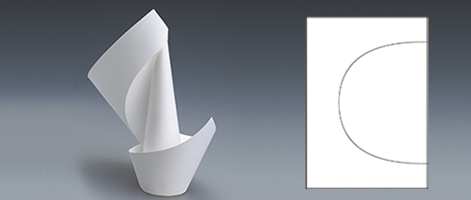
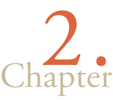
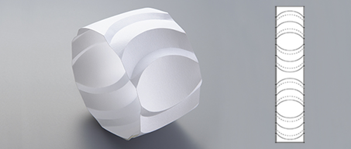
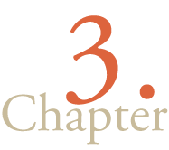
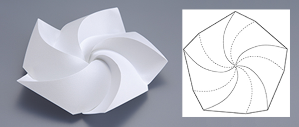
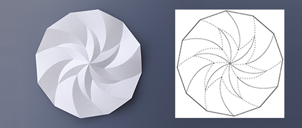
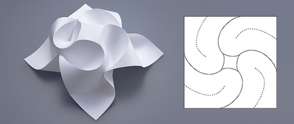
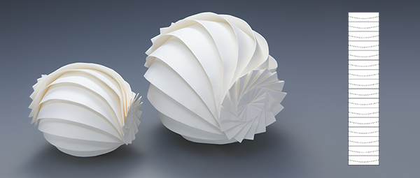
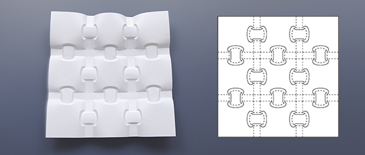

豊富な図版
紙を曲線で折った様子を、多数の図版・写真で解説します。

紙を曲線で折った様子を、多数の図版・写真で解説します。
作品例は大きく美しい二色写真で紹介しています。
作品例の展開図は、準備が整った章からインターネット上でダウンロードできます。
Downloadどのように曲線折り紙を作り出すか、その技法を丁寧に説明しています。
より深く知りたい方のために、コラムで理論的・数学的な解説を加えています。
本書中で紹介されている作品の展開図データ（PDF、SVG、DXF形式）は現在準備中です。

以下の作品の展開図データがダウンロードできます。
水芭蕉／波線を折って作る形／ト音記号／紙の編み込み


以下の作品の展開図データがダウンロードできます。
リング／波型の土手／さざ波の陰影


以下の作品の展開図データがダウンロードできます。
スクリュー／渦巻のタイリング／三又ブーメランのタイリング


以下の作品の展開図データがダウンロードできます。
山脈／フリーハンドで描く山脈／星の回転

以下の作品の展開図データがダウンロードできます。
花／枯山水(1)

以下の作品の展開図データがダウンロードできます。
球体／タマゴのラッピング

以下の作品の展開図データがダウンロードできます。
円錐のレリーフ／曲線段折りのタイリング／ホイール／枯山水／円柱部品の変幻／四角形の橋渡し／円筒への彫刻
PDF形式のファイルを表示・印刷するためには、Adobe社製のAdobe Acrobat Readerなどの、PDF形式に対応したソフトウェアが必要になります。
Adobe Acrobat Reader ダウンロード用URL： https://get.adobe.com/jp/reader/
（PDFファイルを拡大・縮小して印刷するためのヒント https://helpx.adobe.com/jp/acrobat/kb/cpsid_91480.html）
DXF形式のファイルは、例えば Adobe社製の Illustrator や グラフテック株式会社のカッティングプロッタ用ソフトウェア Silhouette Studio などに対応しています。
（注：DXF形式には多様なフォーマットがあり、DXF形式に対応しているとされるソフトウェアでも、正しく読み込めないことがあります。）